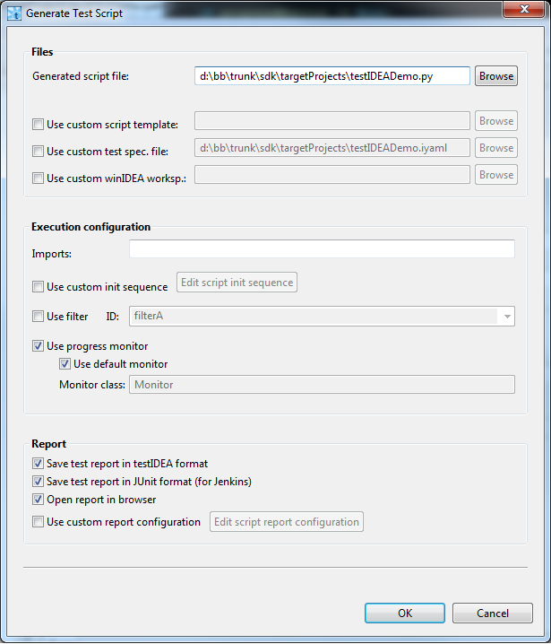

The script can be generated by selecting command
iTools | Generate Test Script in testIDEA. The
dialog shown below opens:

The default settings give us good results, but there are also many possibilities for customization. Each control in a dialog has descriptive tool-tip, which describes the meaning of setting. Tip: Make sure that the names of Imported modules in testIDEAFile | Properties | Scripts match
existing modules with extension functions. If no extension
functions are used by your test cases, then you can clear this
field. Otherwise the generated script will fail
with ImportError exception.
If the generated script does not meet our requirements, we can modify
it and use it as a template. The only constraint for template are two
lines with special comments used as markers of configuration section.
These two lines should start with '
#@
' special comment. Everything between these two lines is replaced with
variables from the script generator dialog shown above. Everything
else is copied from the template to the generated script.
Most of
functionality shown in this section is implemented in class
isystem.itest.PTestCase for Python and in
class CTestCase for other languages.
(see API documentation bundled with SDK). Before writing own
code it is recommended to see documentation of this class and write own
functions only if the provided class does not meet our requirements.
The main class for loading test specifications from iyaml file is
CTestBench. Let's see an example:
import isystem.connect as ic
testBench = ic.CTestBench.load('myTests.iyaml', 0)
That's it! Object
testBench
now contains everything we've created and saved in testIDEA. If we take
a look at
CTestBench API, we can see that it has methods for getting references
to the three parts of information managed by testIDEA -
test environment,
test specification, and
test report configuration. Each of these objects then provides
additional methods to access test data. Classes
CTestEnvironmentConfig and
CTestReportConfig are usually not that interesting in scripting
environment, since we usually already know settings like the output
report format or initialization steps. The most important class is
therefore
CTestSpecification, which contains all information about tests
and expected results.
isystem.test API provides access to all test data, but usually
we just want to execute the test. This can be done with the following
code:
rootTestSpec = testBench.getTestSpecification()
rootTestSpec.setRunFlag(False)
import isystem.itest as it
testCase = it.PTestCase(connectionMgr)
testCase.runTests(rootTestSpec, None, None)
These lines will execute all the tests from file created with testIDEA.
The
rootTestSpec
is only a container for all other test specifications, and contains no
data for testing. That is also the reason to set its run flag to
false
. Otherwise we'll get the following runtime error:
ValueError: Function name must not be empty string!
If we want to get more control over test execution, we can execute base
tests one by one. Example:
for i in range(rootTestSpec.getNoOfDerivedSpecs()):
testSpec = rootTestSpec.getDerivedTestSpec(i)
testCase.runTests(testSpec, None)
The next code snippet demonstrates filtering. It executes base tests
which contain tag '
extended
':
for i in range(rootTestSpec.getNoOfDerivedSpecs()):
testSpec = rootTestSpec.getDerivedTestSpec(i)
tags = ic.StrVector()
testSpec.getTags(tags)
if 'extended' in tags:
testCase.runDerivedTests(testSpec, None, None)
If we want to control execution of each tests, including derived tests,
then recursion is useful, so we need to write the following function:
def runDerivedTests(testCase, testSpec, filterTag, results):
"""
This method runs derived tests recursively. Some basic filtering
is performed on tags.
"""
if testSpec.getRunFlag():
mergedTestSpec = testSpec.merge()
tags = ic.StrVector()
mergedTestSpec.getTags(tags)
if filterTag in tags:
# merge base test spec and the derived one into one test spec
print 'executing:', mergedTestSpec.getTestId()
testCase.itest(mergedTestSpec, None)
results.append(testCase.getTestResults()[0])
numDerivedTestSpecs = testSpec.getNoOfDerivedSpecs()
for idx in range(0, numDerivedTestSpecs):
runDerivedTests(testCase, testSpec.getDerivedTestSpec(idx), filterTag, results)
To execute tests we can write:
rootTestSpec = testBench.getTestSpecification()
rootTestSpec.setRunFlag(False)
testResults = []
runDerivedTests(testCase, rootTestSpec, 'extended', testResults)
for testResult in testResults:
if testResult.isError():
print "Error: ", testResult.getTestId()
else:
print "OK: ", testResult.getTestId()
Saving to file is shown in examples mentioned below.
runTests()
in examples above, we've also specified the two additional parameters
as
None
. The first parameter can be used to specify object with script methods
specified in test specifications, and the second one may provide us
feedback during execution. Implementation and usage of these two
objects is shown in SDK examples
samples/itest/cumulativeCoverage.py
, and
samples/itest/scriptCallbackMethods.py
. See also SDK API documentation.
samples/itest/loadRunReport.py
and
samples/itest/filterTests.py
. API for test reports is used in
samples/itest/testResults.py
.
SDK also contains other examples for advanced usage of
isystem.connect and
isystem.test. Script generated by
testIDEA are also a good starting point.